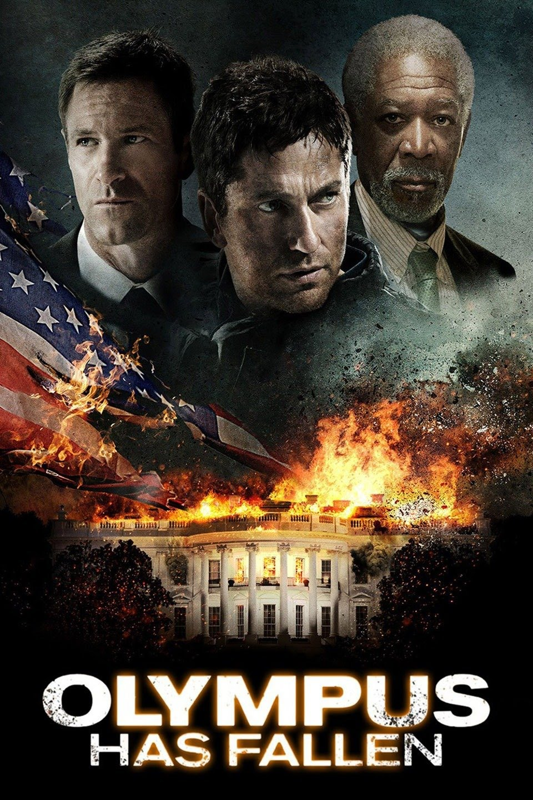

Back to Main Page
Olympus has Fallen
The unthinkable happens when heavily armed and highly trained terrorists launch a bold daytime attack on the White House. The building is overrun, and President Benjamin Asher (Aaron Eckhart) and his staff are taken hostage. Luckily for Asher, former presidential security officer Mike Banning (Gerard Butler) is on the scene. With time running out, it's up to Banning to locate Asher's son before the extremists do and rescue the president before his captors unleash their ultimate plan.
Cast
- Gerard Butler as Mike Banning
- Aaron Eckart as President Benjamin
- Morgan Freeman as Allan Trumbull
